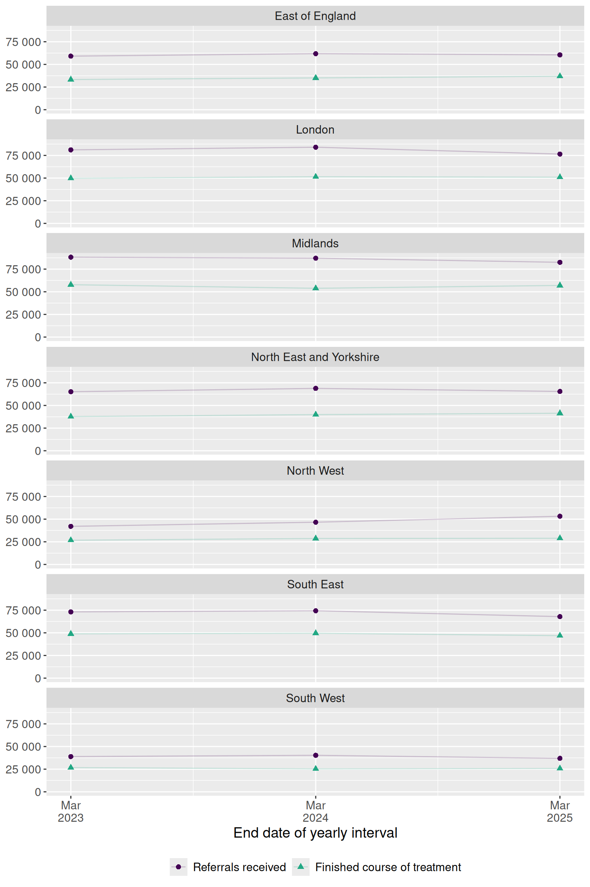

# Load packages
library(nhstt)
library(ggplot2)
library(dplyr)
library(scales)
library(stringr)
library(patchwork)
# Measures to analyse, with labels for the figure
selected_measure_labels <- c(
referrals_received = "Referrals received",
finished_course_treatment = "Finished course of treatment"
)
# Filters for data selection
selected_org_type <- "Commissioning Region"
excluded_org_name <- "UNKNOWN"
selected_measure_statistic <- "count"
selected_variable_a <- "Depression"
# Get measures_annual data
measures_annual <- get_measures_annual(
periods = c(
"2019-20",
"2020-21",
"2021-22",
"2022-23",
"2023-24",
"2024-25",
"2025-26"
)
)Note: This guide is for illustration purposes only and may contain errors. It demonstrates example usage of the dataset and functions, but results should not be interpreted as validated analyses.
This example demonstrates how to explore annual NHS Talking Therapies reports using the nhstt package. We’ll look at regional trends in depression referrals and finished treatments to illustrate the basic workflow for accessing and visualising this publicly available data.
Setup
We start by loading the necessary packages and downloading the annual key measures dataset with get_measures_annual(). This report contains annual performance indicators for NHS Talking Therapies services across England.
Select data for analysis
Here we filter the data to focus on received referrals and finished treatments at the regional level. This step requires careful exploration of the underlying data structure.
# Select data for analysis
selected_measures <- measures_annual |>
filter(org_type == selected_org_type) |>
filter(org_name != excluded_org_name) |>
filter(measure_name %in% names(selected_measure_labels)) |>
filter(measure_statistic == selected_measure_statistic) |>
filter(variable_a == selected_variable_a) |>
select(
start_date,
end_date,
org_name,
variable_a,
measure_statistic,
measure_name,
value
)
# Tidy data for analysis
selected_measures <- selected_measures |>
mutate(
org_name = str_to_title(str_remove(org_name, "\\s*COMMISSIONING REGION$")),
org_name = str_replace_all(org_name, "\\b(Of|And)\\b", tolower),
measure_name = factor(
measure_name,
levels = names(selected_measure_labels),
labels = selected_measure_labels
)
)Create figure
Finally, we visualise the trends over time for each region.
